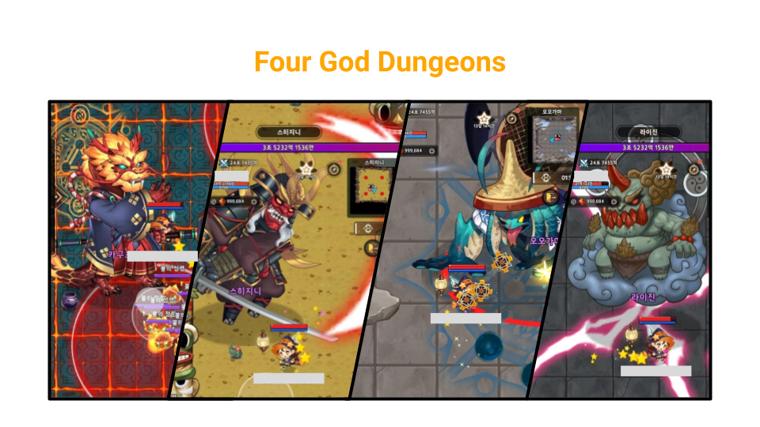
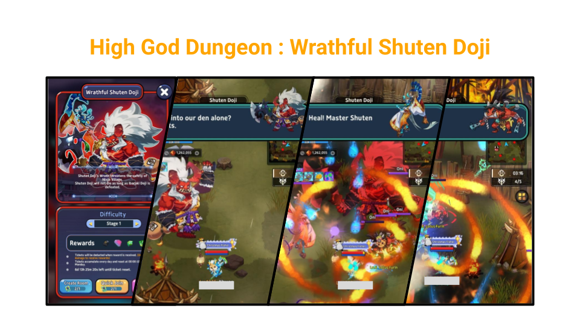
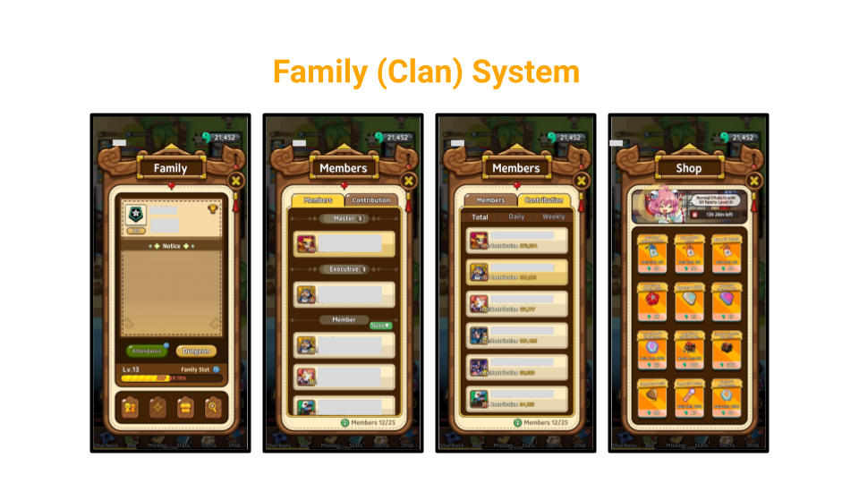
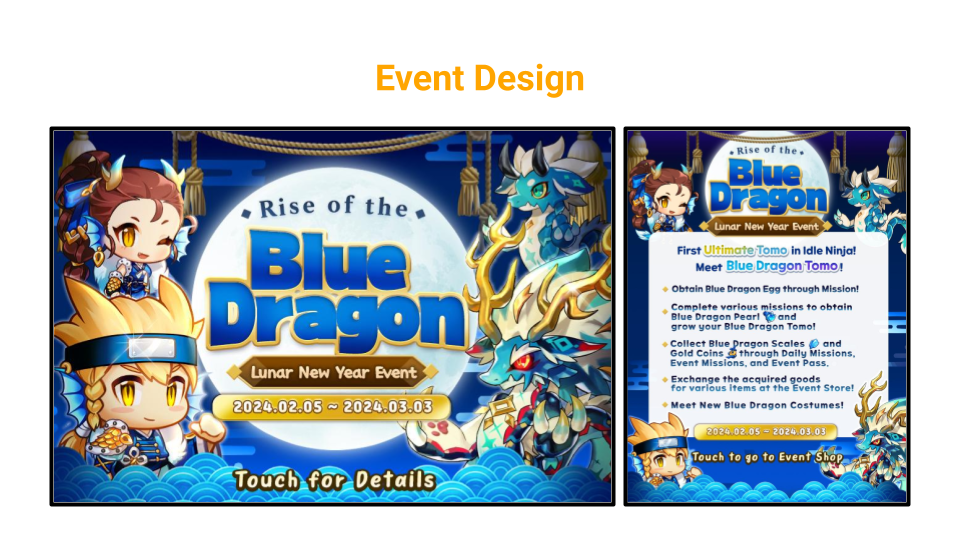
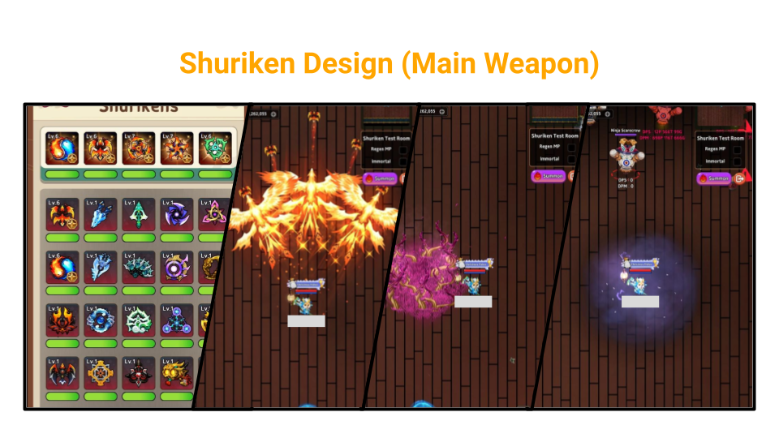
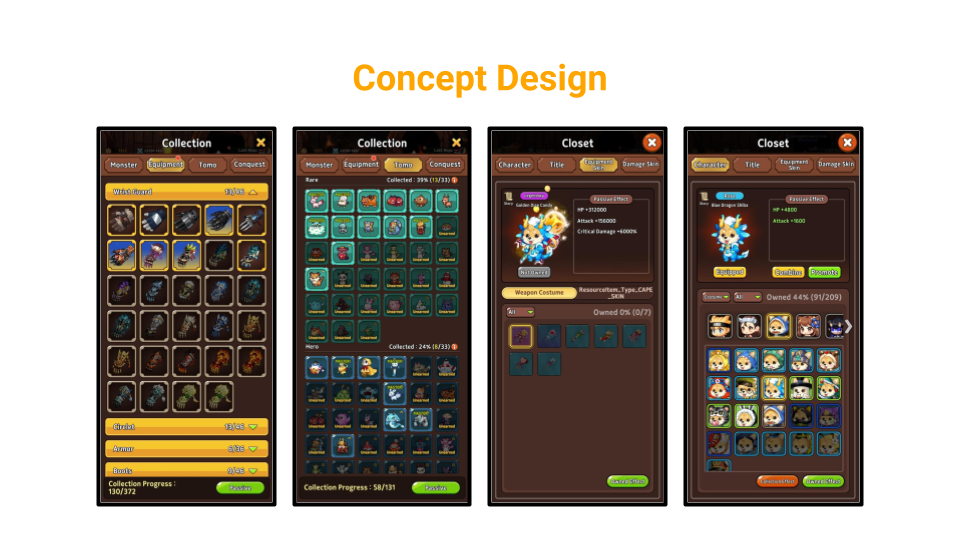

The Field serves as the primary hunting ground where players can leave their characters to grow passively.
By benchmarking similar games, I designed each hunting ground to feature unique monsters. Although this approach aimed to enhance the game's first impression and quality, it delayed the release of new fields, making it difficult to convey the rapid growth expected in an idle game.
This issue was resolved by adding a Hard mode, introducing variations of existing monsters.
Four God Dungeons features boss battles that players encounter early in the game, offering equipment that boosts their stats upon defeating the bosses.
Although the bosses were released sequentially, they were designed to have the same stats to give players the freedom to choose their desired equipment. However, this design failed to challenge high-level players and overwhelmed new players with too many choices at once.
We addressed this by strengthening the tutorial, adding guide missions, and increasing the difficulty levels from 5 to 20 to facilitate a gradual progression.
If I were to redesign this dungeon, I would differentiate the bosses' stats and unlock the dungeons sequentially based on player growth.
Designed for high-level players, where players can obtain the "Ring" equipment.
Shuten Doji and Ibaraki Doji, two yokai bosses, were designed to fight cooperatively against the players, distinguishing them from previous bosses. Special attention was given to the bosses' skills and patterns to provide a reasonable combat experience.
I scripted the bosses to interact with each other during battle, and conducted extensive playtesting to ensure high quality.
To foster a sense of belonging among players, we introduced the Family (Clan) system shortly after the game's launch.
Initially, it included attendance check and family shop features, where players could use clan currency earned only through attendance. Later, family dungeon was added, allowing players to earn more clan currency, which made it challenging to introduce meaningful items in the clan shop.
Although I planned a comprehensive renewal of the clan system and dungeons, I handed over these responsibilities to another designer before leaving the company.
Over three years, I planned various events, with the last being "Rise of the Blue Dragon," which generated $0 in revenue during the event period.
This event introduced the game's first Ultimate-grade Blue Dragon Tomo (Pet). Players had to level up the Blue Dragon and use items to promote it. To drive revenue, we separated the items needed for leveling and promotion, creating growth hurdles. However, the EXP points required for leveling were set too high, causing frustration rather than challenge.
We alleviated this issue by adding more sources to gain EXP items.
If I were to redesign this event, I would make leveling easier while increasing the difficulty of collecting promotion materials.
Ninjas throw shurikens and activate skills to damage the enemies. Ninjas can equip up to 5 shurikens based on their preferred combinations.
I have contributed to designing the shurikens, from concept to skill mechanics. I have Worked with artists, programmers, and others to bring powerful shurikens live to the ninjas.
• Concept design of equipment: Wrist Guard, Circlet, Armor, and Boots.
• Concept design and implementation of Tomos (Pet), including skills.
• Equipment Skin system design and concept design for skins provided through events.
• Concept design of 200+ character costumes provided through events.